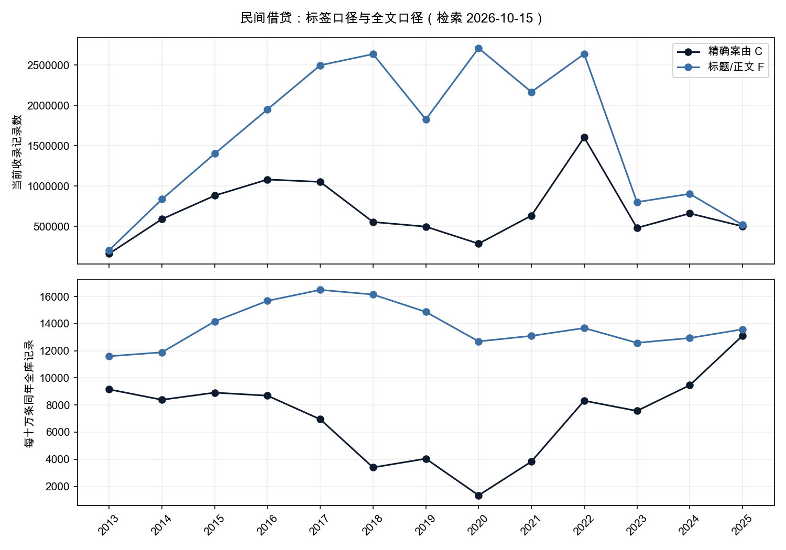
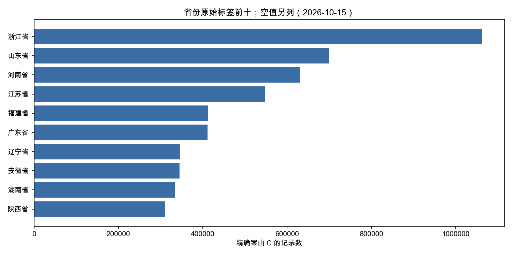

给民商法论文和实证课题的数据起点：先展示收录与检索边界，再讨论如何做逐案研究。每一条记录可能是一份程序性文书、同案复本或他案引述；关键词共现不能代替法官的实体判断。
一、主题定义：精确案由与全文分别回答什么
C为裸keyword字段cause精确等于“民间借贷纠纷”；F为标题或正文检索完整短语“民间借贷纠纷”，各字段对ik_smart与ik_max_word取逻辑并集；U为C∪F。均排除bench测试批次。C回答标签归属，F回答主题文本候选召回。研究利息语境时，再在各集合中统计正文词共现，不把共现词当作另一种案由。
| 集合 | 记录数 | 案号以“号”结尾的记录 | 原始相异案号约 |
|---|---|---|---|
| C | 9,322,422 | 8,929,325 | 7,728,462 |
| F | 22,241,602 | 19,871,153 | 17,360,221 |
| U | 22,881,805 | 20,448,840 | 17,465,541 |
检索日期：2026-10-15；查询与原始聚合响应，键：C, F, U, C_repeat。记录为精确计数，原始相异案号为HLL估算。
相异案号以原始caseNo作cardinality、precision_threshold=40000；未归一化括号与空白，也未跨一审二审合并纠纷。它是HLL估计，不是精确去重数量。案号不合格式记录未纳入该估计；相异案号估值不能直接相减推导集合差。
match(cause.t, 民间借贷纠纷, operator=or)命中28,681,478条；与精确C交集9,322,422条。这个比例只量标签匹配，不是人工语义准确率，不能拿OR总数当民间借贷案由量。
检索日期：2026-10-15；查询与原始聚合响应，键：labels, tokenized_OR, tokenized_OR_and_C。记录为精确计数，原始相异案号为HLL估算。
二、2013–2025：年度记录与同年收录规模归一化
归一化=该集合当年记录÷全库同年记录×100000。分母与分子使用同一个year字段并排除bench；不是法院受理总量或人口。year来自索引date，部分批次对应发布/采集时间，不能当成借款发生、起诉、立案或裁判落款日期。

| year | C记录 | C相异案号约 | F记录 | 同年全库分母 | C/十万 | F/十万 |
|---|---|---|---|---|---|---|
| 2013 | 161,313 | 157,963 | 204,410 | 1,762,537 | 9152.32 | 11597.49 |
| 2014 | 589,896 | 569,948 | 836,076 | 7,033,956 | 8386.40 | 11886.28 |
| 2015 | 881,769 | 850,269 | 1,401,740 | 9,894,747 | 8911.49 | 14166.51 |
| 2016 | 1,081,392 | 1,038,504 | 1,951,343 | 12,443,177 | 8690.64 | 15682.03 |
| 2017 | 1,052,047 | 1,015,352 | 2,498,448 | 15,147,489 | 6945.36 | 16494.14 |
| 2018 | 554,286 | 440,584 | 2,637,181 | 16,331,967 | 3393.87 | 16147.36 |
| 2019 | 496,895 | 262,131 | 1,827,480 | 12,290,542 | 4042.91 | 14868.99 |
| 2020 | 285,325 | 172,151 | 2,710,792 | 21,359,050 | 1335.85 | 12691.54 |
| 2021 | 633,743 | 483,100 | 2,167,355 | 16,548,198 | 3829.68 | 13097.23 |
| 2022 | 1,604,468 | 1,017,952 | 2,638,648 | 19,292,669 | 8316.46 | 13676.95 |
| 2023 | 481,507 | 422,298 | 801,093 | 6,365,236 | 7564.64 | 12585.44 |
| 2024 | 660,700 | 623,668 | 903,781 | 6,984,435 | 9459.61 | 12939.93 |
| 2025 | 500,759 | 433,242 | 518,615 | 3,818,342 | 13114.57 | 13582.20 |
检索日期：2026-10-15；查询与原始聚合响应，键：C, F, corpus_years。记录为精确计数，原始相异案号为HLL估算。
总数减去所有year桶合计的缺年记录：C 17,392、F 783,017、U 783,266；2013–2025以外年份保留在附档。2023年公开与收录明显收缩，不能把记录下降当作真实借贷纠纷减少。2020年C只有285,325条而F有2,710,792条，首先提示标签与批次口径问题，不能直接讲政策使诉讼下降。
三、地域、程序与文书类型：保留未识别值

| 省份原始标签 | C记录 | 占C |
|---|---|---|
| 空字符串 | 1,310,107 | 14.05% |
| 浙江省 | 1,062,118 | 11.39% |
| 山东省 | 699,151 | 7.50% |
| 河南省 | 629,914 | 6.76% |
| 江苏省 | 547,790 | 5.88% |
| 福建省 | 412,284 | 4.42% |
| 广东省 | 411,227 | 4.41% |
| 辽宁省 | 346,220 | 3.71% |
| 安徽省 | 344,802 | 3.70% |
| 湖南省 | 333,946 | 3.58% |
| 陕西省 | 310,445 | 3.33% |
| 上海市 | 268,208 | 2.88% |
| 四川省 | 260,067 | 2.79% |
| 湖北省 | 227,127 | 2.44% |
| 河北省 | 217,905 | 2.34% |
| 吉林省 | 198,022 | 2.12% |
| 内蒙古自治区 | 195,616 | 2.10% |
| 重庆市 | 190,225 | 2.04% |
| 黑龙江省 | 172,497 | 1.85% |
| 北京市 | 169,323 | 1.82% |
| 广西壮族自治区 | 163,818 | 1.76% |
| 江西省 | 161,483 | 1.73% |
| 甘肃省 | 144,362 | 1.55% |
| 新疆维吾尔自治区 | 96,977 | 1.04% |
| 云南省 | 96,127 | 1.03% |
| 贵州省 | 94,082 | 1.01% |
| 山西省 | 86,159 | 0.92% |
| 宁夏回族自治区 | 60,779 | 0.65% |
| 天津市 | 57,294 | 0.61% |
| 青海省 | 31,020 | 0.33% |
| 海南省 | 11,902 | 0.13% |
| 新疆维吾尔自治区生产建设兵团分院 | 4,190 | 0.04% |
| 西藏自治区 | 3,931 | 0.04% |
| 最高人民法院 | 2,084 | 0.02% |
| 新疆维吾尔自治区高级人民法院生产建设兵团分院 | 1,150 | 0.01% |
| 宁省 | 7 | 0.00% |
| `山东省 | 6 | 0.00% |
| 山山东省 | 5 | 0.00% |
| 1江苏省 | 3 | 0.00% |
| 3777江苏省 | 3 | 0.00% |
| 南省 | 3 | 0.00% |
| 山332东省 | 3 | 0.00% |
| 某某省 | 3 | 0.00% |
| 江江苏省 | 3 | 0.00% |
| 辽辽宁省 | 3 | 0.00% |
| ----江苏省 | 2 | 0.00% |
| -山东省 | 2 | 0.00% |
| -广东省 | 2 | 0.00% |
| -江苏省 | 2 | 0.00% |
| 0山东省 | 2 | 0.00% |
| 15山东省 | 2 | 0.00% |
| 1山东省 | 2 | 0.00% |
| 1陕西省 | 2 | 0.00% |
| 205广东省 | 2 | 0.00% |
| 28山东省 | 2 | 0.00% |
| ‘’广东省 | 2 | 0.00% |
| 原陕西省 | 2 | 0.00% |
| 发辽宁省 | 2 | 0.00% |
| 江8苏省 | 2 | 0.00% |
| ｓ山东省 | 2 | 0.00% |
| 246广东省 | 1 | 0.00% |
检索日期：2026-10-15；查询与原始聚合响应，键：C。记录为精确计数，原始相异案号为HLL估算。
空字符串与字段缺失分别保留；省份同义写法本轮未合桶，附录保留原始取值，不把异形标签当作新增行政区。原告批量诉讼、法院集中管辖与批次重复均可能影响地域分布，不能据此评价各地借贷风险。
| 程序集合 | C记录 | 案号含初 | 案号含终 |
|---|---|---|---|
| 一审 | 7,188,510 | 7,139,230 | 310 |
| 二审 | 612,848 | 39 | 609,759 |
| 未映射 | 1,521,064 | 382,370 | 38,818 |
检索日期：2026-10-15；查询与原始聚合响应，键：C。记录为精确计数，原始相异案号为HLL估算。
一审合并1、0301、民事一审、一审、刑事一审、行政一审；二审合并2、0302、民事二审、二审、刑事二审、行政二审。其他保留未映射；不猜procedure=3就是再审。案号初/终仅为交叉诊断，文书量比不是上诉率。
| 标题文类（按顺序互斥） | C记录 | 占C |
|---|---|---|
| 决定书 | 3,949 | 0.04% |
| 判决书 | 4,669,006 | 50.08% |
| 裁定书 | 3,228,416 | 34.63% |
| 调解书 | 124,396 | 1.33% |
| 通知书 | 78,465 | 0.84% |
| 标题未识别 | 1,218,190 | 13.07% |
检索日期：2026-10-15；查询与原始聚合响应，键：C。记录为精确计数，原始相异案号为HLL估算。
标题短语依次识别判决书、裁定书、调解书、决定书、通知书；后类排除前类，其余未识别。没有按正文首行补型，也未同时叠加caseType与procedure造成批次编码互斥。该分类仍是标题词面规则，不是逐案文种人工审计。
四、两组关键词：利息语境与计息表述
第一组为正文“利率”“利息”及其并集；第二组为“LPR”“贷款市场报价利率”“四倍”“年利率24”。每项都取双分词器并集；中文phrase是分词位置匹配，不是逐字子串校验。“年利率24”可能跨空格标点匹配，也不涵盖所有中文数字写法。各词可重叠，不相加。
| 正文词/并集 | C命中 | C共现率 | F命中 |
|---|---|---|---|
| LPR | 242,253 | 2.60% | 285,250 |
| 利息 | 5,311,669 | 56.98% | 10,793,053 |
| 利率 | 3,854,854 | 41.35% | 6,815,007 |
| 利率利息并集 | 5,320,364 | 57.07% | 10,816,763 |
| 四倍 | 1,049,887 | 11.26% | 1,367,005 |
| 年利率24 | 642,964 | 6.90% | 1,571,900 |
| 贷款市场报价利率 | 1,058,042 | 11.35% | 1,393,624 |
检索日期：2026-10-15；查询与原始聚合响应，键：C, F。记录为精确计数，原始相异案号为HLL估算。
| year | C记录 | C利率/利息并集 | C内共现率 | F内共现率 |
|---|---|---|---|---|
| 2013 | 161,313 | 121,670 | 75.42% | 70.45% |
| 2014 | 589,896 | 404,082 | 68.50% | 60.55% |
| 2015 | 881,769 | 589,158 | 66.82% | 56.96% |
| 2016 | 1,081,392 | 727,985 | 67.32% | 53.90% |
| 2017 | 1,052,047 | 686,382 | 65.24% | 49.63% |
| 2018 | 554,286 | 208,700 | 37.65% | 50.64% |
| 2019 | 496,895 | 133,167 | 26.80% | 49.04% |
| 2020 | 285,325 | 21,596 | 7.57% | 41.02% |
| 2021 | 633,743 | 353,054 | 55.71% | 43.87% |
| 2022 | 1,604,468 | 935,711 | 58.32% | 51.39% |
| 2023 | 481,507 | 275,945 | 57.31% | 49.92% |
| 2024 | 660,700 | 379,726 | 57.47% | 53.57% |
| 2025 | 500,759 | 218,696 | 43.67% | 44.28% |
检索日期：2026-10-15；查询与原始聚合响应，键：C, F。记录为精确计数，原始相异案号为HLL估算。
利息词可能出现在诉请、合同约定、双方争辩、他案转述或法条附录。“四倍”也不专指贷款市场报价利率；LPR字母可能有大小写与分词影响。本页不计算法院适用某上限的比例、不抽取实际利率、不判断请求获支持，也不报告胜诉率。
五、方法与局限：为什么不能直接做政策断点
- 全量聚合，未抽样；不声称随机样本量、语义纯度或最大单一原告占比。若要做这些判断，应按dataset分层、记录random_score种子与n，再检查批量诉讼簇。
- 精确案由只覆盖有相应标签的批次；F中的空案由不能全部视为漏标。C/F/U的dataset与cause原始聚合可复核覆盖构成。
- 日期要逐份核验。year不是独立于date的时钟；研究规则变化时，还要区分借款成立、立案、裁判与公开日期，建立适用范围，不以2020年分桶代替处理组。
- 正文为空、公开事由占位、缺段与截断会改变共现分母。exists(body)不能证明有可用全文；本轮没有实读正文完整性，不报告完整率。
- 不同案号可能仍属同一纠纷，一案也可多文书；没有合并程序或规范化案号。记录分布不能直接当纠纷发生率。
- 归一化只校正同年收录规模，不能消除选择公开、缺标签、日期偏移与漏收录。细分样本不足30，无法得出统计结论。
六、附录：可执行查询与复核
judgments索引，size:0、track_total_hits:true，所有响应未超时、failed shards=0；C用_count重读一致。下载文件仅含查询和聚合响应，没有姓名、正文与个案清单。正式论文引用应标日期、口径、清洗规则并重跑。
{
"C": {
"bool": {
"filter": [
{
"term": {
"cause": "民间借贷纠纷"
}
}
],
"must_not": [
{
"term": {
"dataset": "bench"
}
}
]
}
},
"F": {
"bool": {
"filter": [
{
"bool": {
"should": [
{
"bool": {
"should": [
{
"match_phrase": {
"title": {
"query": "民间借贷纠纷",
"analyzer": "ik_smart"
}
}
},
{
"match_phrase": {
"title": {
"query": "民间借贷纠纷",
"analyzer": "ik_max_word"
}
}
}
],
"minimum_should_match": 1
}
},
{
"bool": {
"should": [
{
"match_phrase": {
"body": {
"query": "民间借贷纠纷",
"analyzer": "ik_smart"
}
}
},
{
"match_phrase": {
"body": {
"query": "民间借贷纠纷",
"analyzer": "ik_max_word"
}
}
}
],
"minimum_should_match": 1
}
}
],
"minimum_should_match": 1
}
}
],
"must_not": [
{
"term": {
"dataset": "bench"
}
}
]
}
},
"利率利息并集": {
"bool": {
"should": [
{
"bool": {
"should": [
{
"match_phrase": {
"body": {
"query": "利率",
"analyzer": "ik_smart"
}
}
},
{
"match_phrase": {
"body": {
"query": "利率",
"analyzer": "ik_max_word"
}
}
}
],
"minimum_should_match": 1
}
},
{
"bool": {
"should": [
{
"match_phrase": {
"body": {
"query": "利息",
"analyzer": "ik_smart"
}
}
},
{
"match_phrase": {
"body": {
"query": "利息",
"analyzer": "ik_max_word"
}
}
}
],
"minimum_should_match": 1
}
}
],
"minimum_should_match": 1
}
}
}检索日期：2026-10-15；查询与原始聚合响应，键：C_repeat, F_body_ik_smart, F_body_ik_max_word。记录为精确计数，原始相异案号为HLL估算。
常见问题
这份民间借贷数据报告统计的是什么？
2026-10-15查询精确案由C为9,322,422条，标题或正文F为22,241,602条，并集U为22,881,805条。它们是当前索引的记录集合，不是全国独立借贷纠纷数量。
出现利息或LPR是否说明法院支持该利率？
不能。C内5,320,364条正文命中利率或利息，比例为57.07%。词语可能出现在诉请、反驳、转述或法条附录。没有抽取裁判主文和统一计息区间，不能推断支持比例。
为什么全文口径比精确案由大？
标题及正文能召回案由空白批次和其他案件中的民间借贷引述。精确案由则会保留没有可用正文的标签记录。两者各有盲区，不能把差集全部解释成漏标或错误案件。
年度表能检验2020年规则变化的因果影响吗？
不能。year随date派生，部分批次使用发布或采集时间；公开选择、批次覆盖与文书类型也随时间变化。本页不把year分界当作政策处理时点，不估计政策效应。
如何获得更细的论文数据与逐案清单？
可通过数据报告服务先约定主题、案号归并、日期核验、语境编码与验收方法。现有页面只提供汇总和可执行查询，不承诺胜诉率、实际支持利率或全国案件普查。
文书查 · 深圳星谱网络科技有限公司。仅供数据研究方法参考，不构成法律意见。检索日期：2026-10-15。